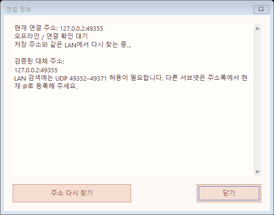

Windows 1.0.37 · 메시지 연결 복구
유선랜과 무선랜을 함께 사용하거나 PC의 IP가 바뀌어 메시지는 보내지지만 받을 수 없을 때 연결 주소를 복구합니다. 전체 기능은 양쪽 Windows PC가 1.0.37 이상일 때 사용할 수 있습니다. Android 배포는 1.0.36을 유지합니다.
자동으로 처리하는 일
- 기존에 승인한 기기의 새 주소를 확인하고, 기존 인증서와 기기 ID로 역방향 연결을 검증한 뒤 사용합니다.
- 유선·무선 주소를 여러 개 보관합니다. 최근 성공 주소부터 연결하고 실패하면 다른 검증 주소로 전환합니다.
- 네트워크 주소 변경을 감지해 연결 정보를 다시 교환합니다. 저장 주소에 연결할 수 없으면 같은 LAN에서 상대를 다시 찾습니다.
- 기존 연락처와 대화 기록, 기기 인증서를 유지합니다.
연결 상태 확인과 수동 복구
- 메시지 창에서 상대를 선택합니다.
- … → 연결 정보를 엽니다. 현재 주소와 포트, 검증된 대체 주소 및 실패 원인을 확인할 수 있습니다.
- 창 안의 주소 다시 찾기를 누릅니다. 대화의 … → 주소 다시 찾기에서도 같은 동작을 실행할 수 있습니다.
- 연결이 복구되면 양방향으로 메시지를 보내 확인합니다. 이미 실패한 일반 메시지는 해당 메시지의 재전송을 누릅니다.
테스트 환경의 화면 예시입니다. 표시된 주소는 실제 사용자 주소가 아닙니다.

상태는 주기적으로 확인되므로 즉시 갱신되지 않을 수 있습니다. 새 주소를 발견해도 기존 인증서 검증이 실패하면 연결하지 않습니다. 인증서가 달라졌다는 안내가 나오면 상대 기기를 직접 확인하세요.
초기 설정과 방화벽
기존 설치에서 LAN 검색을 쓰려면 초기 설정 다시 실행으로 방화벽 규칙을 갱신하세요. 관리자 권한을 요청할 수 있습니다. 기존 TCP 49352–49371 허용에 더해, 같은 실행 파일에 대해 UDP 49352–49371 / 같은 서브넷 수신을 허용합니다.
조직의 방화벽 정책, 무선 AP의 기기 간 격리, 다른 VLAN·서브넷에서는 자동 검색이 되지 않을 수 있습니다. 저장 주소로도 연결되지 않으면 상대의 현재 IP를 확인하여 주소록에서 IP를 수정·등록하세요. 수신이 거부되었다면 상대의 메시지 수신 허용과 차단 설정을 확인합니다.
진행 중인 파일 전송과 기존 공유 링크의 주소는 자동으로 다른 네트워크로 이동하지 않습니다. 파일은 기존 이어받기를 사용하고, 필요하면 새 공유 링크를 전달하세요.
English quick guide
Windows 1.0.37 recovers approved peers after IP changes, keeps multiple verified Ethernet/Wi-Fi addresses, prefers the last successful route and falls back to another route when needed. It monitors network changes and can rediscover peers on the same IPv4 LAN. New addresses must pass the existing certificate and device-ID checks.
Update both Windows peers, then open the conversation menu … → Connection details / Find address again. Re-run initial setup to add the local-subnet UDP discovery firewall rule. Discovery may be blocked across subnets, by client isolation or by organization policy; in that case, register the peer's current IP through the address book. Retry previously failed messages using their Retry action. Existing file streams and share URLs do not move automatically. Android remains on 1.0.36.